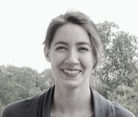
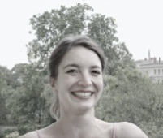

Selma Kracht
Studium der Architektur an der Bauhaus Universität Weimar
und der Robert Gordon University Aberdeen M.Sc. Architektur
(Bauhaus Universität Weimar) Freiberuflich in der historischen
Bauforschung tätig seit 2016

Dora Pohl
Studium der Kunstgeschichte, Architekturwissenschaften,
evangelischen und katholischen Theologie an der TU Dresden,
Universität Wien und Humboldt Universität zu Berlin M.A.
Kunstgeschichte.
In der historischen Bauforschung tätig seit 2016,
Freiberuflich seit 2018
Kooperation mit:
Schneidenbach Bauforschung
Bossenwerk
Phillipp(?)